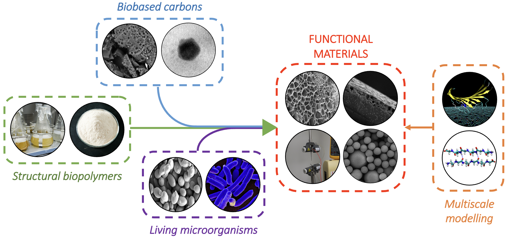

We aim to design the next generation of sustainable functional materials to address grand challenges in healthcare, infrastructure, or the environment. We strive to develop these materials entirely from biopolymeric and biobased resources, ensuring the circularity of their manufacturing. Our research combines experimental and computational tools at the intersection between engineering biology, (bio)chemical engineering, materials science and computational modelling. Our group, headed by Diego López Barreiro, is part of the UCL Department of Chemical Engineering, the Manufacturing Futures Lab (MFL) and the Centre for Nature-Inspired Engineering (CNIE).